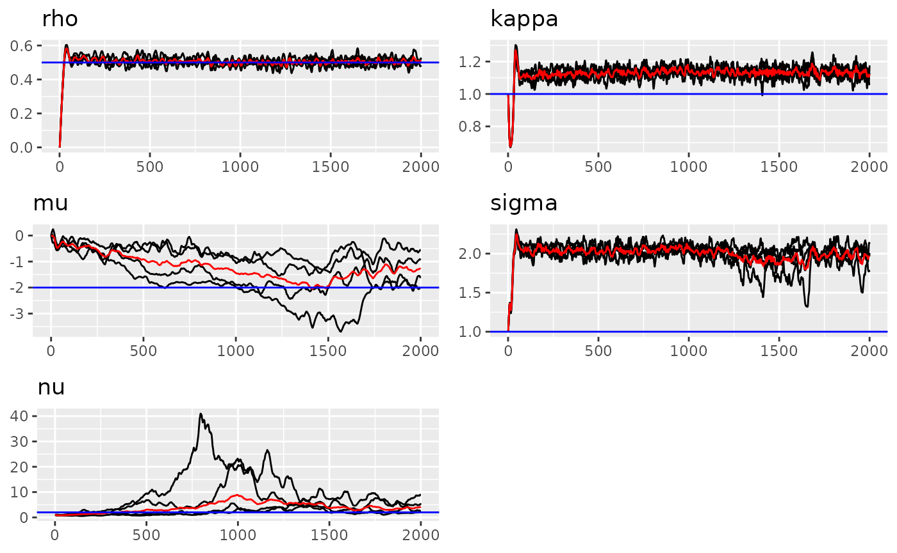
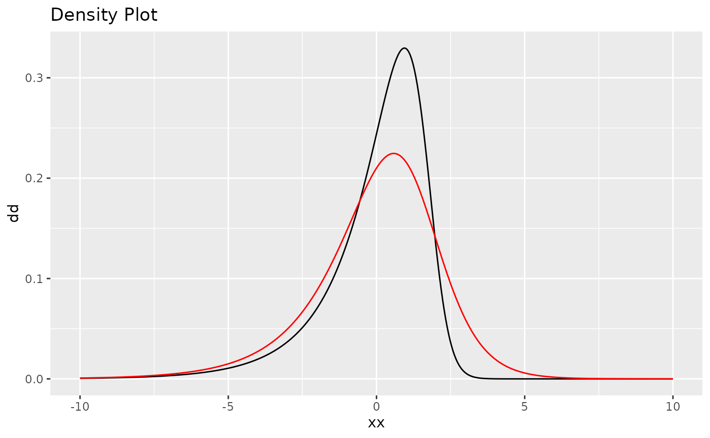

In this vignette, we will show how to fit the separable space-time
model (using tensor product structure in ngme2).
The separable space-time model is defined by the Kronecker product between the precision matrices of the spatial and temporal random effects. Additional information about separable space-time models can be found in Cameletti et al. (2013).
For the usual model, we have the following structure: \[ \mathbf{K} \mathbf{X}(s) = \boldsymbol{\epsilon},\] where \(\mathbf{K}\) is some operator matrix, \(\boldsymbol{\epsilon}\) represents the noise (Gaussian or non-Gaussian).
In the tensor product model, the operator matrix \(K\) can be constructed by other two operator matrices of two models:
\[K = K_l \otimes K_r,\] where \(K_l\) and \(K_r\) are the operator matrices of the first and second models, respectively.
To use the space-time model, we need to first define the mesh of the model, i.e., the discretization of the space-time domain (time \(\times\) location). It can be done by providing the mesh for each. For example, we can provide the same mesh as in the regular spatial model, and also provide the mesh for the time index.
The R interface for tensor product model requires map as a list of 2
indices and 2 operators namely first (time) and
second (space) to build the model.
The following is one simple example of how to build the space-time (2d location) model.
Here the mesh of the model will be ordered according to the order of the time index (year).
set.seed(16)
library(ngme2)
n <- 10
# generate time randomly of length n
time <- sample(2001:2004, n, replace = TRUE)
# generate 2d location randomly of length n
loc <- cbind(runif(n), runif(n)) * 10
# show the time and loc
data.frame(time, loc)
#> time X1 X2
#> 1 2001 3.1974498 9.676396
#> 2 2003 5.9111487 8.120988
#> 3 2003 1.5721967 5.445619
#> 4 2001 6.6138198 4.306273
#> 5 2003 5.2534078 2.278224
#> 6 2003 2.4020197 6.487465
#> 7 2004 8.4731194 9.513628
#> 8 2004 6.8851465 9.739844
#> 9 2002 7.1672573 7.647669
#> 10 2002 0.7615558 4.748097
# create the mesh for space (2d location)
mesh <- fmesher::fm_mesh_2d(
loc.domain = cbind(c(0, 1, 1, 0, 0) * 10, c(0, 0, 1, 1, 0) * 5),
max.edge = c(1, 10),
cutoff = 0.1
)
plot(mesh)
# define the space-time model
m0 <- ngme2::f(
map=list(time, loc), # from the data
model="tp",
first=list(model="ar1"), # ar1 model for time (mesh generated automatically)
second = list(model="matern", mesh = mesh)
)
# show the model
m0
#> Model type: Tensor product
#> first: AR(1)
#> rho = 0
#> second: Matern
#> kappa = 1
#> Noise type: NORMAL
#> Noise parameters:
#> sigma = 1Now let’s turn to simulate and estimate this type of model.
############################## simulation
mesh2d <- fmesher::fm_mesh_2d(
loc.domain = cbind(c(0, 1, 1, 0, 0) * 10, c(0, 0, 1, 1, 0) * 5),
max.edge = c(1, 10),
cutoff = 0.1
)
mesh2d$n
#> [1] 256
# generate random loc for each year
n_obs <- c(102, 85, 120, 105, 109, 100) # observation for each year
year <- rep(2001:2006, times = n_obs)
# 2d coordinate
x <- runif(sum(n_obs)) * 10;
y <- runif(sum(n_obs)) * 5
# set the model for simulation
true_model <- ngme2::f(
map = list(year, ~x+y),
model = "tp",
first = list(model="ar1", rho = 0.5),
second = list(model="matern", mesh = mesh2d),
noise = noise_nig(mu=-2, sigma=1, nu=2)
)
W <- simulate(true_model)[[1]]
AW <- as.numeric(true_model$A %*% W)
Y_obs <- AW + rnorm(length(AW), sd = 0.5)
df <- data.frame(year, x, y, Y_obs)Next we run the estimation:
############################## estimation
ngme_fit <- ngme(
Y_obs ~ 0 + f(
map = list(year, ~x+y),
model="tp",
name="tp",
first = list(model="ar1"),
second = list(model="matern", mesh = mesh2d),
noise = noise_nig()
# control = control_f(numer_grad = T)
),
data = df,
family = "normal",
control_opt = control_opt(
iterations = 2000,
n_parallel_chain = 4,
verbose = TRUE,
rao_blackwellization = TRUE,
preconditioner = "fast"
),
debug = FALSE
)
#> Starting estimation...
#>
#> Starting posterior sampling...
#> Posterior sampling done!
#> Note:
#> 1. Use ngme_post_samples(..) to access the posterior samples.
#> 2. Use ngme_result(..) to access different latent models.
ngme_fit
#> *** Ngme object ***
#>
#> Fixed effects:
#> None
#>
#> Models:
#> $tp
#> Model type: Tensor product
#> first: AR(1)
#> rho = 0.477
#> second: Matern
#> kappa = 0.868
#> Noise type: NIG
#> Noise parameters:
#> mu = -0.656
#> sigma = 1.25
#> nu = 0.709
#>
#> Measurement noise:
#> Noise type: NORMAL
#> Noise parameters:
#> sigma = 0.492
#>
#>
#> Number of replicates is 1To see the results of estimation, we can use traceplot
function.
traceplot(ngme_fit, "tp")
# compare noise density
plot(noise_nig(mu=-2, sigma=1, nu=2), ngme_result(ngme_fit, "tp")$noise)
# traceplot(ngme_fit)Next we will show how to do prediction at unknown year and location.
# new predict location
n_new <- 10
# generate time randomly of length n
time_new <- sample(2001:2004, n_new, replace = TRUE)
# generate 2d location randomly of length n
loc_new <- cbind(runif(n_new), runif(n_new)) * 10
# For the tp model (model name we give), we need two arguments to do the prediction.
predict(ngme_fit, map=list(tp=list(
year=time_new,
pos=loc_new
)))
#> $mean
#> [1] 0.03634795 -0.36332160 -0.06028664 0.38393791 0.00000000 -0.28748846
#> [7] 0.00000000 0.15092865 0.28868972 0.52669535
#>
#> $sd
#> [1] 0.2464890 0.2578849 0.5174445 0.3187198 0.0000000 0.2691620 0.0000000
#> [8] 0.2701588 0.2208944 0.2139089
#>
#> $`5quantile`
#> [1] -0.40801258 -0.74198513 -0.77840206 -0.06917763 0.00000000 -0.82012300
#> [7] 0.00000000 -0.29039117 -0.05222943 0.22858346
#>
#> $`95quantile`
#> [1] 0.44130126 0.02112343 0.65403297 0.92479179 0.00000000 0.06951375
#> [7] 0.00000000 0.55679218 0.61112249 0.87139234
#>
#> $median
#> [1] 0.009613149 -0.350774647 -0.114706423 0.368987820 0.000000000
#> [6] -0.238606872 0.000000000 0.164825775 0.294053345 0.521707568
#>
#> $mode
#> [1] 0.01013371 -0.33739146 -0.51260086 0.38392885 0.00000000 -0.19059123
#> [7] 0.00000000 -0.01837408 0.29601301 0.50299663